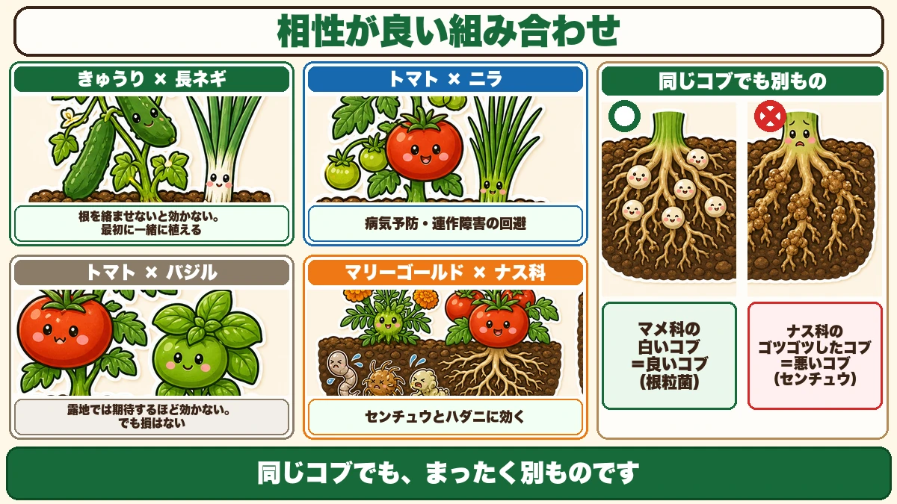
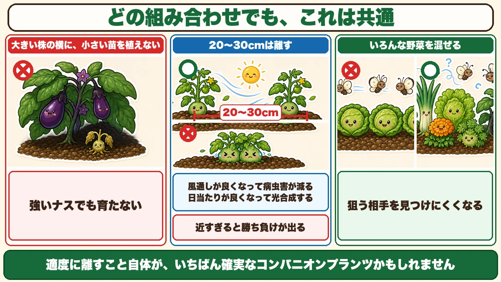
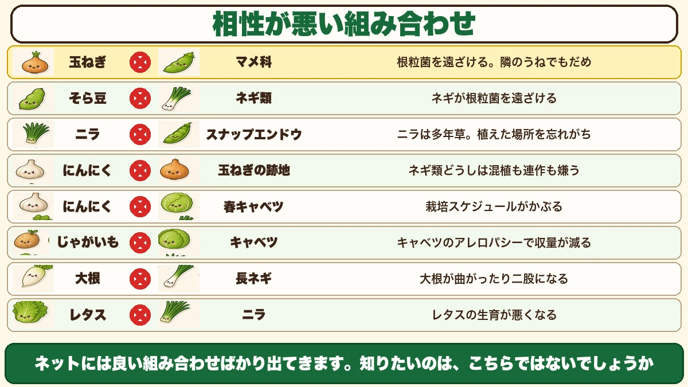
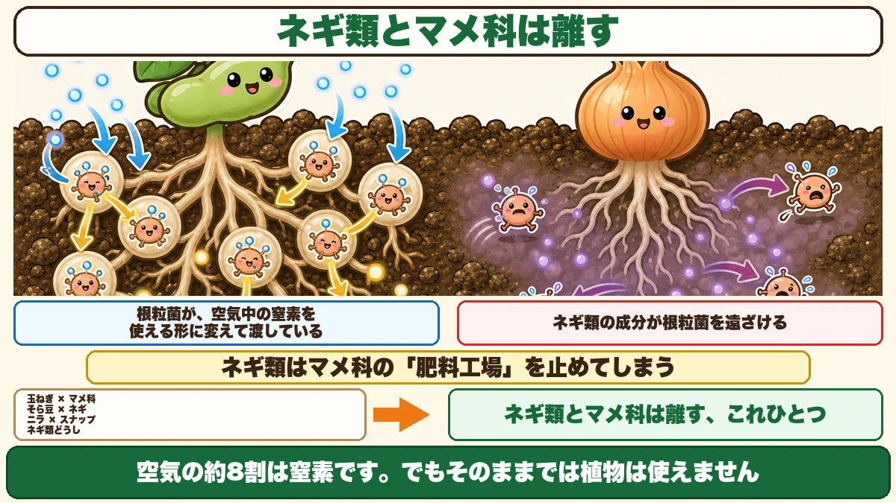

コンパニオンプランツの組み合わせと配置｜混植の手順・相性の両論・失敗診断
どうも、8150（えいこう）です🌱 家庭菜園歴8年、理科の教員免許を持っていて、有機・無農薬で野菜を育てています。
📖 この記事の目次
この記事で分かること
- 混植を計画するときは、主役の野菜と、相棒に期待する働きを先に決めます。
- 病気への備え、地上の虫への備え、食べる楽しみは、別々の目的として考えます。
- 根を近づけるネギ・ニラの方法と、場所をあけて育てるバジルの方法は区別します。
- 相性の説明が合っていても、日陰や混雑ができれば育ちは悪くなります。
- 玉ねぎと豆など、すすめる説明と避ける説明がある組み合わせは、条件を比べて小さく試します。
- 虫が来た、しおれた、味が変わらなかった。そんなときの確認順と、次の作付けに役立つ記録をまとめます。
コンパニオンプランツは、一緒に育てる植物の組み合わせを工夫する考え方です。「トマトの横にバジル」と聞くと、さっそく植えたくなりますよね。でも、植える名前だけ覚えると、あとで『どのくらい離すの？』『大きくなったらどうするの？』で止まりがちです。
ここでは、組み合わせの名前に、配置と管理をセットにします。主役を育てる場所を残したうえで、相棒を足す。これを記事の軸にします。野菜にも場所の都合があるんですよね。仲良しの名前がついていても、ぎゅうぎゅうでは困ります(笑)。
見る順番は、これから始める方なら早見から。もう混植している方なら、症状の章からで大丈夫です。全部の組み合わせを覚える必要はありません。まずは、いま育てたい野菜に関わるところだけ拾ってください☺️
効果は、どの畑でも同じように出るとは限りません。土、雨、苗の大きさ、植えた時期が違います。このページでも、栽培の考え方として使えることと、結果を約束できないことを分けてお伝えします。
早見：コンパニオンプランツの育て方（ひと目で分かる数字）
植える前に拾っておく数字
- 準備する時期：夏野菜と同時にネギ・ニラを使う計画では、3月ごろから苗の確保を考える説明があります。全国どこでも3月に外へ植える、という意味ではありません。
- 植え付けの時期：相棒の苗だけでなく、主役の野菜の地域別の適期に合わせます。混植全体に共通する植え付け月はありません。
- トマトとバジルの距離：20〜30cmをあける説明と、約40cmをあける播種例があります。20cmにすれば必ず十分、という最低保証の数字ではありません。
- バジル同士の距離：15〜20cmという例があります。トマトからバジルまでの距離と取り違えないようにします。
- 秋の葉物の列間：15〜20cmの列まき例があります。背が高くなる夏野菜の株間に、そのまま転用しません。
- ネギ・ニラの置き方：病気への備えとして使う方法では、主役と同じ植え穴に入れ、根が接する配置にする説明があります。普通に収穫用のネギを並べる方法とは目的が違います。
- 種を覆う土の深さ：約5mmの浅まきと、約1cmの播種例があります。植物やまく場所が異なるため、中間の深さを共通の正解にはしません。
- うね幅：混植専用の統一値はありません。主役の株間、相棒の広がり、作業通路を合わせて考えます。
- 元肥：主役と相棒の種類、前作の肥料の残り方で変わります。豆の根粒菌を使うから、全区画を無肥料にするという決め方はしません。
- 追肥：混植したハーブは、主役に与えた肥料を利用でき、別の追肥が必要ない場合もあります。単独栽培のハーブと同じ回数を足す前に葉色と育ちを確認します。
- 収穫までの日数：混植そのものに収穫日はありません。トマト、きゅうり、バジルなど、育てる植物ごとの予定を書きます。
- 連作の間隔：今回の材料には、混植すれば何年連作できる、何年あければ安全、という共通の年数はありません。主役の前作と病気の履歴を見て場所を選びます。
数字が並びましたが、全部を畑へ持ち込まなくてOKです。まず使いたい組み合わせだけ選び、数字の横に『何と何の間隔か』を書いてください。距離の話では、ここが抜けると別の植物の数字が混ざってしまいます。
例えば、バジルを2株育てたいなら『バジル同士』と『主役からバジル』の両方を確認します。相棒同士の間隔が足りても、その列をトマトへ寄せすぎれば主役の場所は狭くなります。点だけではなく、育つ区画全体を見る感じです。
目的別に選ぶ組み合わせ
- きゅうりと長ネギ：根の近くの環境を利用して、土から起こる病気に備える考え方。苗を植える時点での組み合わせが紹介されています。
- トマトとニラ：同じ植え穴で根を近づける方法。ニラを置けば連作の問題が全部なくなる、と受け取らないことが大切です。
- トマトとバジル：別の場所を確保して育てる組み合わせ。水分の利用や味への期待が語られますが、甘さが必ず増すわけではありません。
- 夏野菜とマリーゴールド：土の中の一部の有害な線虫への備えが目的になる組み合わせ。地上の虫をすべて追い払う働きと一緒にしません。
- 違う種類の葉物：列を分けて組み合わせる方法もあります。混ぜてまく方法なら、出てきた芽を見分け、間引きできることも必要です。

図は、組み合わせを思い出すための案内として使ってください。期待する効果の確かさや、植える距離まで同じという意味ではありません。配置を決めるときは、このあとの手順と両論の章も合わせて読みます。
今回は見送る場所を決める
空いているように見えても、植えない方が管理しやすい場所があります。
- 成長した主役の葉がすでに重なっている場所
- 通路から葉裏や株元を確認できなくなる場所
- 支柱の調整や収穫の動きをふさいでしまう場所
- 相棒を足すと、土の乾き具合が見えなくなる場所
- 以前に病気が出て、原因をまだ整理できていない場所
「何か足せそう」から入るより、まず空けておく場所を決める方が配置は考えやすくなります。小さな菜園ほど、作業できる余白も栽培に使う場所の一部です。植わっていない土が見えるからといって、無駄になっているわけではありません。
作業の手順（時期の順）
1．主役と、相棒に任せたい目的を決める
- 収穫を優先したい野菜を主役として書きます。
- 相棒を入れる目的を『土の病気への備え』『地上の虫への備え』『食べる葉や花も楽しむ』から選びます。
- 主役だけを育てる場合の株間と作業場所を、先に確保します。
- その余裕に収まる相棒の数と、育ったときの大きさを考えます。
トマトを育てたいのに、相棒のバジルを増やすことが目的になってしまうと、配置が逆転します。バジルをたくさん食べたいなら、単独で育てる場所も選べます。両方を収穫したい計画と、主役の根の近くへ少量の植物を入れる計画は、別々に作って大丈夫です。
ここで決めておくと助かるのが『何を見て、続けるか判断するか』です。葉の虫を減らしたいなら葉裏を観察。収穫も楽しむなら、食べられた量と手入れの負担を記録します。虫の数しか見ていないのに「土の病気にも効いた」と広げないよう、目的を一つずつ整理します。
2．前作と、残っている植物を地図にする
- 紙にうねと通路を描き、前回植えた野菜を書きます。
- まだ残っている野菜や多年草の場所を入れます。
- 日陰になりやすい側と、水がたまりやすい部分を印で残します。
- 同時に育てる組み合わせと、収穫後に次を植える順番を分けて書きます。
ニラのように長く同じ場所に残る植物は、地上が目立たない時期にも区画の記録が役立ちます。夏野菜を片づけたら全部空いた、と考える前に、残してある相棒を確認してください。次に豆や別の野菜を植えるとき、前年の配置が判断材料になります。
混植は同じ時期に複数を育てる方法です。前の野菜を収穫して、次の野菜へつなぐのは後作の話。小さな苗を育てておき、先の野菜が片づくころに広がらせるのは、リレーする計画です。同じ名前の組み合わせでも、同時に大きくなるのか、順番に場所を使うのかで混雑は変わります。
3．種から育てるか、苗を用意するかを選ぶ
- 主役の植え付け予定日から、相棒を使う日を決めます。
- 必要な苗の本数と、手元にある株を確認します。
- 少量なら購入苗、多く必要なら種から育てる方法も比べます。
- 売り場にある時期と、使いたい時期が合うか調べます。
- 根を近づける方法なら、地上の高さだけでなく根の育ちも確認します。
ネギやニラは、夏野菜の苗が並ぶ日に、ちょうどよい大きさで必ず買えるとは限りません。苗を買う予定なら、早めに入手できるか確認しておくと段取りが立ちます。種から作る場合も、まいた直後の細い苗を、根のよく育った株と同じものとして扱わないようにします。
バジルも、1袋の種からたくさん育てる必要があるとは限りません。数株だけ使いたい方には、育苗場所や水やりまで含めると苗を選ぶ方が合う場合があります。「種の方が安そう」だけで決めず、余った株をどこへ置くかも考えてください。増やした分を全部主役の横へ植える必要はありません。
4．小さな種は、水で動かさないようにまく
- 種袋の適期と覆土の指定を確認します。
- 容器でまくなら、土へ先に水を含ませる方法を選べます。
- 水が引いてから種を置き、指定された深さで土をかぶせます。
- 表面を軽く押さえ、種が動きにくい状態にします。
- 追加の水が必要なときは、強い流れを当てずに与えます。
- 発芽までの間も、表面の乾きと、芽が出たかを確認します。
細かい種は、水やりでまいた場所から移動することがあります。せっかく間隔をそろえたのに、端にまとめて寄っていたら困りますよね。先に吸水させる方法は、この動きを減らすための段取りです。
十分に湿った直後は、続けて水を足す必要がない場合があります。これは、その日から発芽まで水を一切与えないという話ではありません。容器、風、日差しで乾く速さは変わります。毎回『今日は水やりの日だから』と同量を注ぐより、まいた場所の湿り具合を見ます。
畑へ直接まく方法には、種を覆って押さえたあと、穏やかに水を与える説明もあります。先に水を与える容器の方法と、あとから水を与える畑の方法を、どちらか一つに統一しなくて大丈夫です。種が流れないこと、適した深さにあること、乾きすぎないことを確認します。
5．主役が育った姿を想像して配置する
- 苗の大きさではなく、葉が広がった状態で植える位置を考えます。
- 背の高い植物が、低い苗へ長く影を落とさないか確認します。
- 主役と相棒の両方へ、手が届く通路を残します。
- 間隔の数字は、植物同士の距離なのか、列間なのかを確認して使います。
- 後で枝を整理したり、相棒を減らしたりできる位置にします。
植え付け直後の苗は、どれも小さくて、なんか場所が余って見えます。でも、その見た目で隙間を埋めると、成長してから葉が重なります。トマト、ナス、とうもろこしなどが近い配置では、背丈と養分の使い方が重なる点も確認してください。
同じ仲間の野菜を集中させると、共通する病害虫がある場合には被害が重なることがあります。ただし、同じ科ならすべて混植禁止という話ではありません。病気や虫を共有しやすいことと、同じ時期に場所を使うことを、別の確認項目にします。

6．ネギ・ニラを根の近くへ使う場合は、植え付け時に準備する
- きゅうりと長ネギ、トマトとニラなど、対象を決めます。
- 主役と相棒の苗を、植える前にそろえます。
- 根を近づける方法を使うなら、同じ植え穴に入れる配置を作ります。
- 主役の苗の根を無理に引き裂いたり、引っ張ったりしないように作業します。
- 植えた日と、相棒の苗の状態を記録します。
この方法は、主役の根の近くへ相棒の根を置く考え方です。別のうねで長ネギを立派に収穫する栽培とは、ねらいが違います。相棒にも主役と同じ収穫を求めて株数を増やすと、土の中も地上も混雑しやすくなります。
根を絡ませると紹介される方法でも、根を傷めてまできつく巻き付ける必要はありません。植え穴へ入れる前から、どこに置くかを決めておくと作業を進めやすくなります。これを行えば病気にならない、連作できる、という保証にはしません。
7．バジルと花は、独立した場所を残して育てる
- バジルは、ネギ・ニラと同じ植え穴の方法へ置き換えず、主役から距離をとります。
- マリーゴールドは、育った背丈や葉の広がりを見て配置を決めます。
- 株元の点検、収穫、主役の支え直しができるか確認します。
- 主役と相棒の植えた位置を写真かメモに残します。
バジルは葉を収穫できるので、育てる楽しみもあります。でも、葉を増やすために枝が広がると、横の野菜を覆う場合があります。収穫しながら大きさを整えるところまで、混植の作業に入れてください。
花については『咲いているから虫よけできている』と見た目だけで判断しません。土の線虫をねらう話と、葉に来る虫をねらう話では、観察する場所が違います。地上の花が元気でも、主役の根の状態まで分かったことにはならないんです。
8．成長中は、相棒の葉裏と株元も点検する
- 主役の葉の表、裏、成長点を見ます。
- バジルや花にも、虫や食べられた跡がないか見ます。
- 葉の重なり、株元の影、空気の通り道を確認します。
- 乾きや肥料の様子は、主役と相棒を別々に観察します。
- 手入れした内容を残し、混植だけの結果と混同しないようにします。
相棒は、虫が来ない植物という意味ではありません。バジルにも虫は来ます。片方に虫がいるから、もう片方を守っている証拠だ、と早合点しないことも大切です。虫の種類、いる場所、被害の増え方を見て判断します。
混植した区画だけ、よく葉を整理していた。あるいは、ほかの虫対策も組み合わせていた。そんな条件が違えば、元気に育った理由を相棒だけに絞れません。手入れを記録するのは、混植の成果を小さく見せるためではなく、次に同じ段取りを選べるようにするためです。
9．広がりすぎた相棒は、収穫と整理で調整する
- 主役の葉へ重なる枝を探します。
- バジルは収穫する部分と、残す芽を確認して切ります。
- 切ったあとに脇芽が増えたら、再び主役を覆っていないか見ます。
- 花は枯れた部分を取り、傷んだ葉を放置しません。
- 整理しても管理できない場合は、相棒の数を減らす選択もします。
バジルは先端を切ると、その下の節から脇芽が育つことがあります。一度切ればずっと小さいまま、とは限りません。収穫したあとにも横幅が増えるので、次の点検で形を見直します。切ったら収量が何倍になる、と決める必要はないです。
葉を食べる目的なら、花芽を確認しながら収穫を続ける方法があります。種を残したい場合は、花を残す管理になります。目的が変われば、同じバジルでも手入れが変わるわけです。混植の名前より『何を収穫したいか』へ戻ると迷いにくくなります。
10．片づけるときに根を見て、次の計画を残す
- 主役を片づけるとき、根の形と傷みを確認します。
- 豆の根粒と、ほかの野菜の根にできたこぶを一緒に扱わないようにします。
- 育ちの悪かった場所と、症状が出た時期を記録します。
- 残す多年草の位置を、地図に戻して書きます。
- 次の野菜は、前作と病気の履歴も合わせて選びます。
収穫できたらそこで終わり、でももちろんよいのですが、片づけのときは地下を見られる機会です。栽培中に抜いて確かめると根を傷めるので、健全な株を調べるなら片づけ時の観察が使いやすいです。
マリーゴールドを土へ混ぜる方法も紹介されますが、野菜を育てているうねへ生の植物を入れることと、次作前に別の場所で利用することは分けます。花の片づけを、すぐ土づくりの完了へつなげる必要はありません。どこに、いつ、何のために入れるかを決めてから扱います。
失敗の見分け方（症状→原因→やること）
相棒を植えたのに、主役の葉に虫がいる
- 症状：バジルやマリーゴールドがある区画でも、主役に虫や食べられた跡があります。
- 考えられる原因：混植は虫を完全に防ぐ方法ではありません。虫の種類や飛来の仕方が、期待した働きと合っていない場合もあります。
- やること：主役の葉裏や先端を確認し、いる虫と被害の位置を記録します。相棒を増やす前に、いま必要な虫対策を考えます。
ここで「数が足りなかったんや」と追加すると、葉が込み合って点検しにくくなることがあります。虫がいた事実と、混植の効果がゼロだったという判断も、同じではありません。比べる条件がない場合は、まず被害の状態を記録するところまでで十分です。
バジルばかり食べられている
- 症状：主役の横のバジルに穴が多く、虫も見つかります。
- 考えられる原因：バジル自体を食べる虫が来ている可能性があります。混み合った葉が観察しづらくしている場合もあります。
- やること：虫を確認し、傷んだ部分と混雑を整理します。広がりすぎて主役の管理を妨げるなら、株数を減らすことも考えます。
バジルに虫が多いから、主役の虫を全部引き受けてくれたと考えるのは早いです。主役から移ったのか、もともとバジルを選んだのかは、葉の穴だけでは分かりません。逆に、主役にも必ず虫が移ると言い切ることもできません。両方の葉を見て、観察した範囲で判断します。
後から足した苗だけ、ほとんど大きくならない
- 症状：先に育った野菜は大きいのに、脇へ追加した苗は小さいままです。
- 考えられる原因：先に育った葉の影や、根の広がりによる水・養分の競争が考えられます。単純に相性だけでは説明できません。
- やること：追加した苗に日が当たるか、土の湿り方が違うかを確認します。無理に数を残さず、十分な場所を確保できるか見直します。
大きなナスの横の小苗と、同時に植えた同じくらいの苗は、出発点が違います。相性がよいとされる名前でも、その差は消えません。次の作付けでは、相棒を使う時期も予定に入れておくと原因を減らせます。
両方の葉が重なり、株元が見えなくなった
- 症状：葉が触れ合い、通路から株元へ手が入りません。
- 考えられる原因：苗のときの見た目で配置し、成長後の横幅を見込んでいなかった可能性があります。
- やること：相棒の収穫と枝の整理で通り道を戻します。主役の葉を一気に取りすぎず、どちらが場所を使っているか見て調整します。
日が入らないからと、主役の葉まで急に減らすと、今度は実が強い日差しへさらされることがあります。葉をなくすことが目的ではありません。主役の収穫に必要な葉を残しながら、点検と通気ができる形を目指します。
混植してから、土が乾きやすくなった
- 症状：相棒が大きくなり、同じ場所の土が以前より乾くように感じます。
- 考えられる原因：気温や風の変化に加えて、植物が増えて水の利用が変わった可能性があります。容器では、使える土の量も限られます。
- やること：主役と相棒の株元を別々に見て、水の与え方と株数を調整します。甘いトマトをねらって、しおれたまま放置しないようにします。
バジルが水を使うという説明はありますが、雨、土、水はけも同時に働きます。どれだけ水を減らせばよいかという共通の数字はありません。相棒に水の調整を任せきりにせず、主役が育てる状態を保ちます。
豆の育ちが悪く、近くにネギ類がある
- 症状：豆が小さく、周囲には玉ねぎ、ネギ、ニラなどが植わっています。
- 考えられる原因：ネギ類との近接を避ける説明があります。ただし推奨する説明もあり、この配置だけを原因に確定できません。日陰や土の状態、肥料の条件も確認が必要です。
- やること：豆の植えた日、近くの植物、距離、葉色を記録します。次回は区画を分けるなど、比較しやすい配置を考えます。
いま育っている豆を「相性が悪いから」とすぐ全部抜く必要はありません。原因が決まらないまま配置と肥料を一度に変えると、何が影響したか分からなくなります。まず主役の状態を確認し、次に試すことを絞ります。
大根が枝分かれした、曲がった
- 症状：収穫した大根が二股になったり、曲がったりしています。
- 考えられる原因：長ネギとの近接を理由に挙げる説明がありますが、今回の材料には距離や発生率を比べた測定結果がありません。根の形だけでは原因を決められません。
- やること：近くの植物だけでなく、まいた場所と土の状態も記録します。次作で配置を変える場合は、その変更が分かるように残します。
『近くにネギがあった』と『ネギが原因だった』には間があります。症状を相性表へ当てはめただけでは、診断になりません。組み合わせは、確かめる候補の一つとして使います。
主役がしおれ、根にこぶが見つかった
- 症状：トマトやナスなどの育ちが悪く、片づけた根にふくらみがあります。
- 考えられる原因：根に被害を与える線虫などを疑う材料になります。ただし、こぶの見た目だけで原因や種類を確定しません。
- やること：野菜の種類、根の形、地上の症状を写真で残します。次に植える場所を決める前に、病気や土の問題も含めて相談できる材料をそろえます。
豆の根にできる根粒と、根の被害によるふくらみは、同じ扱いにしません。『こぶは全部悪い』『豆なら何でもよい』のどちらにも寄せず、何の植物の根なのかから確認します。マリーゴールドが隣にあったことも、被害が起こらない証拠にはなりません。
ナスがしおれたので、青枯れ病だと思う
- 症状：混植しているナスがしおれています。
- 考えられる原因：病気も候補ですが、水の状態や根の不調も確認が必要です。今回の材料にある目視の判断を、そのまま確定診断には使えません。
- やること：いつから、どの株に、どの程度の症状が出たかを残します。相棒を足して治そうとせず、原因の確認を先に進めます。
虫が少なかったことと、土の病気が起こらなかったことは別の成果です。葉の虫対策がうまくいった区画でも、しおれの原因を調べる作業は必要になります。混植の評価も、病気と虫を分けて考えます。
花の枯れた部分が残り、傷んできた
- 症状：マリーゴールドの古い花や葉が、そのまま株に残っています。
- 考えられる原因：相棒として植えたことで、花の手入れが後回しになっている可能性があります。
- やること：枯れた花や傷んだ葉を取り、株が込み合っていないか確認します。主役と同じ点検の順番に入れておきます。
相棒にも手入れが必要です。増やすほど点検する株も増えます。主役の世話が忙しい方なら、花を少数にするのもよい選び方です。続けられる数にすることは、途中で放置しないための準備になります。
説明が分かれていること
玉ねぎとそら豆は、離すのか、一緒に育てるのか
- Aという説明：玉ねぎの成分が豆の根粒菌へ影響するとして、近い配置や隣のうねを避けるようすすめます。
- Bという説明：植え付けと収穫の時期が近く、場所を使いやすいことや、根粒菌と天敵への期待から、組み合わせをすすめます。
- どう考えればよいか：今回の材料では、同じ土、品種、距離で比べた結果がなく、どちらを一般的な正解にするかは決められません。
同じ情報源の中でも説明が分かれています。片方だけを採って『隣なら必ずだめ』『一緒なら必ず育つ』と覚えると、条件の違いが消えてしまいます。初めてで主役の収穫を優先したいなら、無理に同じ区画へ入れず、管理しやすく分ける選択ができます。
すでに一緒に育っているなら、組み合わせの名前だけで撤去する判断はしません。まず育ちを見る。次回、試すなら品種や植え付け日をなるべくそろえ、どの配置だったかを残します。全国共通の安全距離として『何m離せばよい』という数字は、今回の材料からは出せません。

この図は、避ける側の説明をまとめたものです。玉ねぎと豆については上の推奨説もあります。図の印だけで例外のない禁止と受け取らず、配置を考えるときの確認候補として見てください。
ニラと豆も、例外なく避けるのか
- Aという説明：ニラが根粒菌へ影響するとして、スナップエンドウなどの豆と近づけないようにします。
- Bという説明：そら豆の相棒としてニラを植えた例があります。ネギと豆をよい組み合わせへ含める説明もあります。
- どう考えればよいか：ニラが根付いたという途中の観察と、豆の収量がよかったという結果は違います。実施例があるだけで、回避説が否定されたとは言えません。
豆の種類や時期もそろっていないので、そら豆の植え付け例を、スナップエンドウの標準手順へ移しません。残してあるニラの近くへ豆をまくなら、位置と育ちを記録してください。地上が小さいから、周囲に植物がないのと同じという判断も避けます。
ネギ・ニラは最初に入れるのか、後からでもよいのか
- Aという説明：主役の根の近くへ置くため、植え付け時に苗をそろえて同時に植えることを重視します。
- Bという説明：すでに植えたトマトの横へ、後からネギやニラを足してよいとする方法もあります。
- どう考えればよいか：対象や植え方が違い、後植えと同時植えで病気への効果を比べた条件付きの結果はありません。
これから計画できるなら、苗を先に準備して植え付け時に配置を決める方が作業しやすいです。植え終えた方は、後からならすべて無意味と考える必要はありません。ただし、すでに広がった根を掘り返してまで、最初の植え方を再現しようとしないでください。
後から追加する場合は、日陰や競争の条件も変わります。方法が紹介されていることと、いまの畑で主役を傷めずにできることは別です。余裕がなければ、次の植え付けで試す計画に回せます。
トマトとバジルの間隔は20〜30cmか、約40cmか
- Aという説明：トマトとバジルなどの混植では、20〜30cmをあける目安があります。
- Bという説明：トマト脇へバジルの種をまく実演には、約40cmをあける例があります。
- どう考えればよいか：苗を置く配置と、種をまく配置の条件を確認し、主役の株間や成長後の広がりも合わせます。
バジル同士の15〜20cmや、葉物の列間15〜20cmは、別の距離です。全部を平均して『混植は25cm』とすると、数字だけが残って対象が抜けます。手元の苗や種の表示も見ながら、植える植物の距離として使ってください。
根を近づけるネギ・ニラの方法は、この離す目安とは別枠です。一つの記事に出てくる数字が違って見えるときは、まず『同じ植え方を説明しているか』へ戻ると整理できます。
バジルでトマトが甘くなるのか
- Aという説明：バジルが水分を使うことによって、トマトの糖度へよい影響があると期待します。
- Bという説明：味の違いを感じなかったという食べ比べの観察があります。雨のある露地では、変化を大きく期待しにくい説明もあります。
- どう考えればよいか：同じ品種や同じ段の果実を、同じ水分条件で測った糖度の比較は、今回の材料にはありません。
甘くなる幅を数字で示すことも、バジルは無効と証明されたと断言することもできません。食べ比べの感想は、その果実を食べた結果です。畑と鉢、果実がついた位置などが違えば、相棒以外の条件も味へ関わります。
味の向上だけを目的にすると、変化が分からなかったときに失敗と感じやすいです。バジルの収穫も楽しみたいなら、その目的も別に書いておけます。主役が育ち、相棒の葉を食べられて、管理にも無理がない。それを続ける理由にしてよいわけです。
ピーマンの横へバジルを植えてよいのか
- Aという説明：カメムシとの関係から、ピーマンへの混植をあまりすすめない説明があります。
- Bという説明：ほかの野菜の横でバジルにも虫が来た観察を踏まえ、ピーマンの横へ植える計画もあります。
- どう考えればよいか：すすめ方が変わったことは、どちらかの効果が確定したという意味ではありません。計画と収穫後の結果を区別します。
ピーマンへ使うなら、葉裏を見られる配置と、相棒を整理できる余白を優先します。虫がいるか、葉が重なるか、主役の手入れが増えるかを見て、続けるかを判断します。相性表に一つの丸印を付けるより、自分の区画の管理条件を残す方が次に役立ちます。
マリーゴールドは、種類や花の色で決まるのか
- Aという説明：種類によって線虫への働きが違うとする説明があります。
- Bという説明：土へ混ぜて利用する例や、地上の虫への備えとして背丈を考える例もあります。花色について、これから比べようとする計画もあります。
- どう考えればよいか：対象、使う部位、育てる期間、植える量が違います。今回の材料だけで、種類や花色の順位表は作れません。
花の色が違うから虫が必ず来ない、背が低いから効果がない、と結論を急がないようにします。購入するときは、植物の名称と育ったときの大きさを確認し、何をねらって使うかを決めます。写真の印象だけで種類を確定しません。
種まきは先に水か、後に水か。深さは5mmか、1cmか
- Aという説明：容器の土へ先に水を含ませ、種をまいた直後の追加の水を省く方法があります。
- Bという説明：畑へ浅くまき、押さえたあとに穏やかに水を与える方法があります。覆土も約5mmと約1cmの例があります。
- どう考えればよいか：種やまく場所が違う手順です。共通の深さを作るより、育てる植物の表示と、種が動かない水の与え方を優先します。
種をまく順番だけを切り取ると、説明が反対に見えます。先に土が湿っているのか、最後に湿らせるのかまで読むと、手順の意味が分かります。表面が乾いたのに『水は不要と書いてあった』と待ち続けないことが大切です。
よくある質問
初めてなら、何組も一度に混植してよいですか
まずは管理できる少数の組み合わせにすると、何を変えたか分かりやすいです。植える数を増やす前に、主役の株間と収穫する通路を残してください。相棒の点検まで続けられる数なら、成長後の調整もしやすくなります。
プランターでもできますか
複数の植物を育てるなら、主役に必要な土と広がる場所を先に確保します。今回の材料には、すべての組み合わせへ使える容器サイズはありません。同じ容器へ詰め込むより、別の容器で管理する選択もあります。
別の鉢で隣に置いても、同じ効果がありますか
根が同じ土へ伸びる方法と、別の容器の植物を近くへ置く方法は条件が違います。根を近づける目的なら、鉢を並べただけで同じ働きになるとは言えません。地上と地下、どちらをねらう方法なのかを確認してください。
ニラの苗が手に入らなければ、夏野菜を植えるのを待ちますか
主役の地域別の適期を優先して考えます。相棒のために主役の予定を大きく変える必要はありません。今回は主役だけを育て、次回は相棒の準備を早めるという選び方もできます。
バジルはトマトと同じ穴へ入れますか
今回の材料では、バジルは主役から距離をとる方法です。根を近づけるネギ・ニラの方法へ置き換えません。小さな苗のときも、枝が広がる場所を残しておきます。
相棒にだけ肥料を追加した方がよいですか
主役へ与えた肥料を、相棒も利用している場合があります。主役と相棒の葉色や育ち、これまでの施肥を見て判断します。別の植物だからと、単独栽培の量を自動で上乗せしないようにします。
豆を混ぜれば、ほかの野菜の肥料は不要になりますか
根粒菌が豆へ窒素を供給することと、隣の野菜へ必要な養分がすぐ十分に渡ることは別です。豆を入れただけで、区画全体の肥料を不要にはできません。根粒が働く前の初期生育や、土に残った肥料も考えます。
混植すれば、同じ場所でトマトを続けられますか
ニラなどを使う病気への備えが紹介されますが、連作の問題をすべて防ぐ保証はありません。前作、病気の履歴、土の状態も見て計画します。今回の材料から、混植で連作できる年数を決めることはできません。
マリーゴールドが咲いていれば、線虫対策は成功ですか
花が咲いたことは地上の生育が進んだという観察です。土の線虫への効果まで確認できたことにはなりません。ねらった対象と育て方を分け、主役の育ちや片づけ時の根も見ます。
黄色いマリーゴールドは避けるべきですか
今回の材料には、花色を比べる計画はありますが、黄色なら必ず不向きという確定した結果はありません。色だけで選ぶより、育った大きさと使う目的を確認します。植えたあとには、花や葉にも虫がいるか見てください。
相性が悪い図に載っていたら、もう抜くしかないですか
いまの育ちと管理の状態を先に見ます。組み合わせの説明だけで、原因も対処も決まるわけではありません。日陰や混雑を直せる場合もあります。次の作付けで配置を分ける選択も残せます。
バジルを切ると、虫よけの働きがなくなりますか
切る量と効果の関係を決められる数値は、今回の材料にはありません。主役を覆うほど広がった状態を、効果のためとして放置しないことが大切です。収穫と枝の整理で、点検できる姿に保ちます。
バジルの花は、全部取りますか
葉を収穫し続けたい場合と、種を残したい場合で管理が変わります。葉を楽しむなら花芽を観察して摘み取る方法があり、採種なら花を残します。花に来る虫と、葉を食べる虫も一緒に扱わないようにします。
切った玉ねぎの葉を置く方法も、同じ混植ですか
生きた株を一緒に育てることと、切った葉を地表へ置くことは別の方法です。今回の材料には葉を利用する説明がありますが、置く量や交換間隔の共通値はありません。生きた根の関係を、そのまま葉の利用へ当てはめません。
どんな記録なら、来年の参考になりますか
主役と相棒の名前、植えた日、位置、苗の状態を残します。虫、しおれ、混雑が起きた日と、そのときの手入れも短く書けると便利です。元気だったという感想だけより、次に同じ配置を作りやすくなります。
学ぶ：コンパニオンプランツのしくみ🔬
地上で起こることと、地下で起こることを分ける
植物を一緒に育てると、地上では葉の重なりや日陰、地下では根が使う場所が変わります。虫への期待だけに目を向けると、光や水の競争を見落とします。相性がよいとされる組み合わせでも、植物が使える場所を増やしてくれるわけではありません。
例えば、トマトの脇に植えたバジルが広がると、主役の株元へ届く光や、手を入れられる範囲が変わります。根を近づけるネギ・ニラの方法は、地下の近い位置での働きをねらっています。同じ『横に植える』でも、観察する場所は違うんです。
だから、混植の成果は一つの印では表しにくいです。虫が少ない、主役がよく育つ、相棒を収穫できる、手入れがしやすい。それぞれを別に見ると、続ける理由と変えたい点が分かります。
根粒菌は、豆と養分を交換している
豆の根には、根粒という小さなふくらみができることがあります。その内部に住む根粒菌は、空気中の窒素を植物が利用できる形へ変えます。この働きが窒素固定です。豆が光合成で作ったものを菌へ渡し、菌は豆へ窒素を供給する関係になります。

菌だけが一方的に豆を助けているのではありません。豆の側にも、菌を養うために使うものがあります。土に窒素が十分ある場合には、根粒の数や働きが変わるという説明があります。根に菌がいるから、土の条件を考えなくてよいわけではないんです。
植えた直後から、根粒が十分働いているとも限りません。初期に必要な養分と、その後の根粒の働きは分けて考えます。豆の種類ごとの育ち方を見ずに『豆なら追肥は一切いらない』へ広げないことが大切です。
豆の根粒と、被害によるこぶは別もの
豆の根粒は、植物と菌の共生に関わる部分です。一方、野菜の根に害を与える線虫によって、根がふくらむ被害もあります。どちらも見た目の言葉では『こぶ』ですが、できる理由と植物への影響が違います。
見分ける入口は、何の野菜か、根のどこにどんなふくらみがあるか、地上の育ちがどうだったかです。色だけを見て、よいか悪いかを決める方法にはしません。今回の材料には、根粒が常に同じ色であるという標準の説明はありません。
健全な豆を、根粒を見るためだけに途中で抜くと栽培へ影響します。片づけのときに観察し、写真と作物名を残す形なら取り組みやすいです。理科の用語を先に全部覚えるより、実物を見て『根にこんな形があるんや』と気づくところからで大丈夫です☺️
植物の成分が、周囲へ働くという考え方
植物が出す物質によって、近くの植物などへ影響が出る働きを、アレロパシーと呼びます。相性の悪い組み合わせには、この考え方で説明されるものがあります。じゃがいもとキャベツについても、キャベツ側の働きを理由に挙げる説明があります。
ただし、名前が付いたことで、どの距離でも同じ結果になると確定するわけではありません。物質の量、土、植物の大きさ、同時に育つ期間などをそろえた比較がなければ、相性表の印から被害の程度は読み取れません。
ネギ類と豆を避ける説明も、植物の成分と根粒菌の関係を理由にしています。一方で組み合わせをすすめる説明もあるため、仕組みとしてもっともらしいことと、栽培条件をそろえて確認された結果は区別します。理由を知るのは、結果を決めつけるためではなく、確かめる項目を増やすためです。
根の近くの微生物を利用する考え方
ネギ・ニラの根の周囲には、主役の病気への備えとして期待される微生物の話があります。この方法では、相棒の根を主役へ近づけることが重視されます。遠い場所へ植えて、香りだけで同じ働きを期待する方法とは分けます。
今回の材料には、字幕の認識が崩れていて正確に採用できない菌名もあります。菌の名前を推測で補うより、まずは『根の近くの環境を使う方法』として理解してください。その環境があれば病原菌が全部消える、という説明にも広げません。
土から起こる病気は、相棒の有無だけで決まるとは限りません。主役の根の状態や前作、土の管理も関係します。混植をしている区画でも、しおれや育ちの変化があれば原因を調べる作業を続けます。
マリーゴールドの花の手入れと、線虫への働きは別の確認
線虫はすべてが野菜へ害を与えるわけではありません。混植で対策の対象にするのは、そのうち野菜へ被害を起こす一部です。マリーゴールドを使う説明があっても、あらゆる線虫をなくすことが目標にはなりません。
花を摘む、枯れた部分を取る、枝を増やす。こうした手入れは植物を育てるための管理です。花数が増えたことを、そのまま線虫への効果量が増えた証拠にはできません。どの種類を、どの対象に、どれくらい育てるかは、花の見た目とは別に確認することになります。
地上の虫についても同様です。花に虫がいた事実だけで失敗と決めず、主役の被害、花自体の被害、点検できる混み具合を見ます。相棒の元気さと、期待した働きの結果を分けると、観察の言葉が具体的になります。
違う植物を混ぜても、病害虫がいなくなるわけではない
違う種類の植物を配置すると、同じ植物だけをまとめた区画とは、見た目やにおい、葉の並びが変わります。それによって害虫が主役を見つける過程へ影響する、という考え方があります。家庭菜園の少量ずつ育てる計画へ取り入れられる視点です。
でも、混ざっていること自体が防虫の保証にはなりません。植物が増えれば隠れる場所や、点検する葉も増えます。被害を早く見つけられる配置にするところまで含めて、混植を考えてください。
同じ科の病害虫を共有する場合にも、少し混ぜたから共有がなくなるわけではありません。多様な配置の考え方と、主役の病気や虫への対応は両方必要です。植物の名前を足すだけより、見る場所と手入れの順番を決める方が実践につながります。
「植えてみた」と「効果が分かった」の間を埋める
混植を植えた時点では、まだ結果は分かりません。苗が根付いたことは、初期の生育を確認できた段階です。そこから主役がどう育ったか、虫や病気がどうだったか、収穫や管理に無理がなかったかを見る必要があります。
同じ品種でも、植えた日、雨、苗の大きさが違うと結果は変わります。味を比べるなら、果実のついた位置や熟し方も違いになります。比べるための記録がない場合は『この区画ではこうだった』という観察として残すと、言いすぎを防げます。
みなさんの菜園で大切なのは、無理なく繰り返せる段取りを見つけることです。植えた場所と日付、困った症状、変えた手入れが分かれば、次は配置の一部分を直せます。うまくいかなかった記録も、次に場所を考える材料になります。
まとめ
混植の計画は、組み合わせの名前より、主役が育つ場所から始めます。相棒の役割を決め、植える時期と苗をそろえ、成長後の広がりまで見込む。この順番なら、植えてからの調整もしやすくなります。
- 主役と相棒を、どちらも収穫したいのか、主役を優先するのか決めます。
- 地上の虫と、土の病気への備えを別の目的として記録します。
- 根を近づけるネギ・ニラと、距離をとるバジルの方法を区別します。
- 間隔は何と何の距離かを確認し、違う数字を平均しません。
- 玉ねぎと豆などの両論がある話は、一方を絶対の法則にせず扱います。
- 葉裏、株元、相棒の葉も見て、込み合ったら収穫や整理で調整します。
- 片づけ時の根と、残す多年草の位置を次の作付けへ引き継ぎます。
最初にする作業は、紙へ主役の野菜と通路を描くことです。そこへ、使いたい相棒の場所を一つずつ足してください。主役へ手が届くか、大きくなっても収穫できるかが見えたら、苗を用意する予定へ進めます。
全部を一度に試さなくても大丈夫です。食べたい野菜を育てる計画に、管理できる相棒を少し足す。そんな始め方なら、混植の楽しさも、変えた方がよいところも見つけやすいかなと思います🌱
マリーゴールドのタネ
ナス科（トマト・ナス・ピーマン・じゃがいも）のそばに植えます。センチュウとハダニに効きます。センチュウの被害は、収穫のときに根のゴツゴツしたコブで分かる。マメ科の白いコブとは、まったく別ものです。
![[商品価格に関しましては、リンクが作成された時点と現時点で情報が変更されている場合がございます。]](https://hbb.afl.rakuten.co.jp/hgb/552615f0.9cc2855e.552615f1.776f7de9/?me_id=1251188&item_id=10001783&pc=https%3A%2F%2Fthumbnail.image.rakuten.co.jp%2F%400_mall%2Fyonezawa%2Fcabinet%2Fhanatane01%2Fhanaharumaki1%2Fhitoezakikongou.jpg%3F_ex%3D240x240&s=240x240&t=picttext "[商品価格に関しましては、リンクが作成された時点と現時点で情報が変更されている場合がございます。]")

ニラのタネ（固定種）
トマトと同じ穴に植えて、根を絡ませます。病気の予防と連作障害の回避になると言われています。ただしニラは多年草なので、植えた場所を忘れないでください。近くに豆を植えると、根粒菌を追い払ってしまいます。
![[商品価格に関しましては、リンクが作成された時点と現時点で情報が変更されている場合がございます。]](https://hbb.afl.rakuten.co.jp/hgb/56eba4de.2d7c5c10.56eba4df.27ead89b/?me_id=1430776&item_id=10000048&pc=https%3A%2F%2Fthumbnail.image.rakuten.co.jp%2F%400_mall%2Fg-tane%2Fcabinet%2Fshohin%2Fyousai%2F01006%2Fy0101007001001_r01.jpg%3F_ex%3D240x240&s=240x240&t=picttext "[商品価格に関しましては、リンクが作成された時点と現時点で情報が変更されている場合がございます。]")
ねぎのタネ
きゅうりと同じ穴に植えます。大事なのは、最初に一緒に植えること。あとから足しても根が絡まないので効きません。4〜5月に苗を買おうとしても手に入らないことがあるので、3月にタネから育てておきます。
![[商品価格に関しましては、リンクが作成された時点と現時点で情報が変更されている場合がございます。]](https://hbb.afl.rakuten.co.jp/hgb/552615f0.9cc2855e.552615f1.776f7de9/?me_id=1251188&item_id=10001752&pc=https%3A%2F%2Fthumbnail.image.rakuten.co.jp%2F%400_mall%2Fyonezawa%2Fcabinet%2Ftane01%2F1015negi%2Ftane-otegarukonegi.jpg%3F_ex%3D240x240&s=240x240&t=picttext "[商品価格に関しましては、リンクが作成された時点と現時点で情報が変更されている場合がございます。]")
バジルのタネ
トマトのそばに植えると糖度が上がると言われています。正直に書くと、露地では雨が降るので期待するほどの効果は出ません。ただ相性が悪いわけではないので、やって損はありません。プランターならもう少し効きます。
![[商品価格に関しましては、リンクが作成された時点と現時点で情報が変更されている場合がございます。]](https://hbb.afl.rakuten.co.jp/hgb/552615f0.9cc2855e.552615f1.776f7de9/?me_id=1251188&item_id=10000735&pc=https%3A%2F%2Fthumbnail.image.rakuten.co.jp%2F%400_mall%2Fyonezawa%2Fcabinet%2Ftane01%2Fherb_sakata%2Fbasil-mail.jpg%3F_ex%3D240x240&s=240x240&t=picttext "[商品価格に関しましては、リンクが作成された時点と現時点で情報が変更されている場合がございます。]")
種まき培土
タネまきのコツをひとつ。先に水をまいてから、タネをまいてください。逆にすると、とくにバジルのような細かいタネは浮いて片側へ流れます。底から水が出るくらいやって、水が引いてからまく。まいたあとの水やりは要りません。
![[商品価格に関しましては、リンクが作成された時点と現時点で情報が変更されている場合がございます。]](https://hbb.afl.rakuten.co.jp/hgb/55e75fe5.20db4cd1.55e75fe7.d1ec32cc/?me_id=1194164&item_id=10000034&pc=https%3A%2F%2Fthumbnail.image.rakuten.co.jp%2F%400_mall%2Fgardening%2Fcabinet%2Fyoudosenyoudo%2Fimg57203270.jpg%3F_ex%3D240x240&s=240x240&t=picttext "[商品価格に関しましては、リンクが作成された時点と現時点で情報が変更されている場合がございます。]")
あわせて読みたい